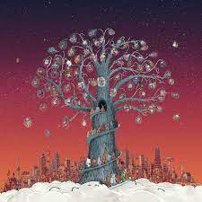
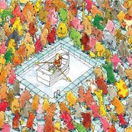

Artificial Selection
2018
"Artificial Selection is a fine addition to not only the Dance Gavin Dance catalog but the entire stylistic
landscape to which it belongs. While connections to other artists are clear, the quintet continues to
maintain a distinctive, exploratory, and skillful identity in comparison to some equally popular peers." -
Pop Matters

Mothership
2016
"When the youthful, carefree nature of the MySpace music revolution is finally forced to grow up, the result
is something along the lines of Mothership. Upholding the lighthearted nature of humorously titled tracks,
diverse riffs with layered vocals featuring flawless transitions between unclean and clean, and
thought-provoking lyricism, Mothership is unexpectedly one of the most impressive records to be released in
2016." - New Noise

Happiness
2009
"After the loss of two more members, and a time period of a six months in which to write and record,
Happiness
should have been nothing more than a horribly rushed and incoherent mess of an album. Yet somehow, Dance
Gavin Dance has once again beaten the odds and created a rather impressive album." - Sputnik Music